03
火山晨光與烏布夜
清晨先到 AKASA 看 Batur 火山湖，再順遊 Tirta Empul、Tibumana、Campuhan、傳統舞蹈與一次完整 SPA。
中等步調，不追景點數量；把移動集中在三個住宿基地，留下能真正放鬆的空白。
清晨先到 AKASA 看 Batur 火山湖，再順遊 Tirta Empul、Tibumana、Campuhan、傳統舞蹈與一次完整 SPA。
住 Jungut Batu，出海找魟魚，再前往 Kelingking、Broken Beach 與 Angel's Billabong。
Nusa Dua 完整度假村日：早餐、私人海灘、泳池、午睡與夕陽。SPA 見優惠再決定。
選 D1–D8 可把其他路線淡化；右側整理當天的出發時間、移動方向與交通耗時。地圖依真實相對方位繪製，但不是導航比例尺。
AKASA 新方向：Day 2 先一路往北上 Kintamani，再沿 Tirta Empul、Tibumana 向南回烏布，不會從聖泉寺折返火山區。時間包含合理緩衝，實際仍依司機與當日路況更新。
每張圖的景點名稱會直接開啟唯一的 Google Maps 地點；右下角另保留照片原始來源，不會帶你到搜尋結果清單。
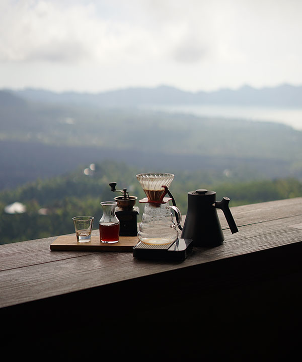
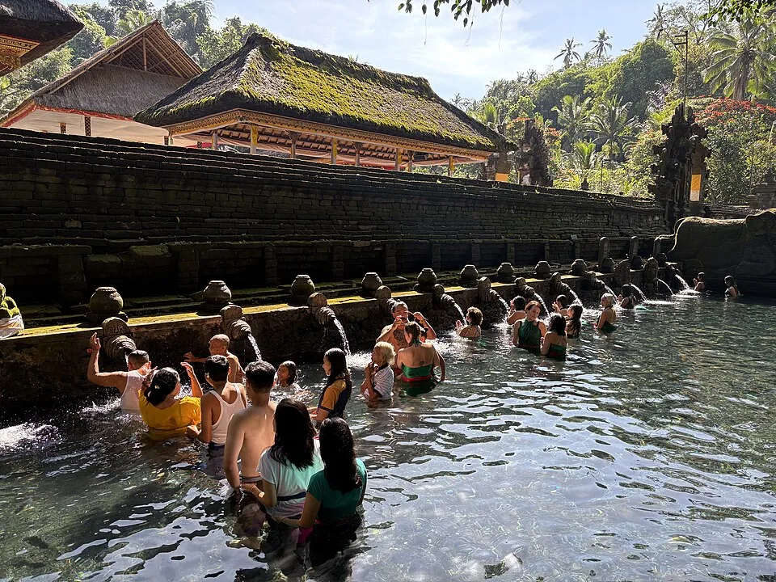
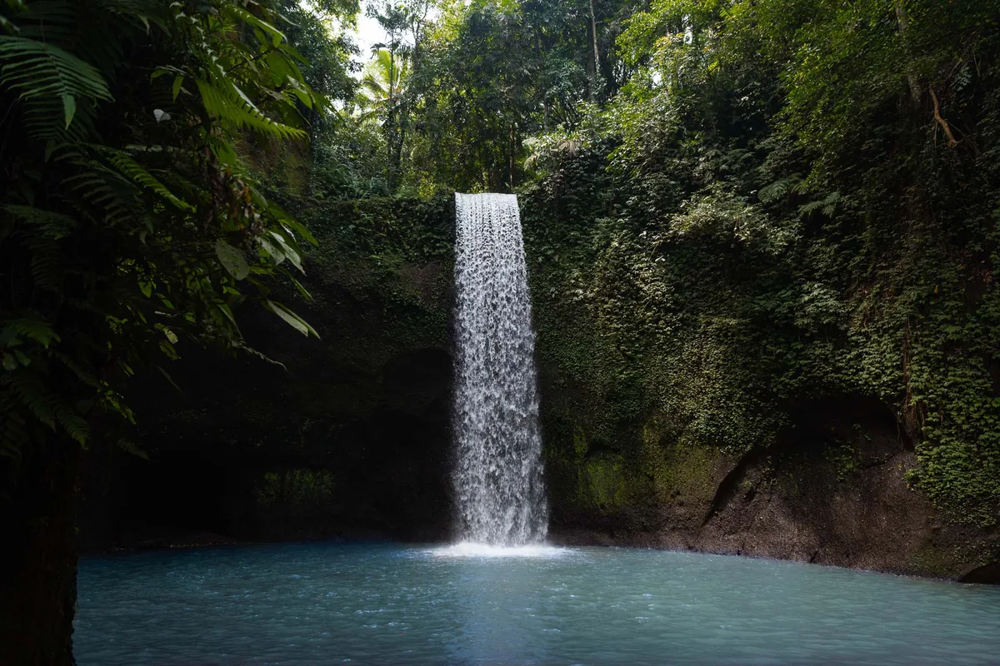
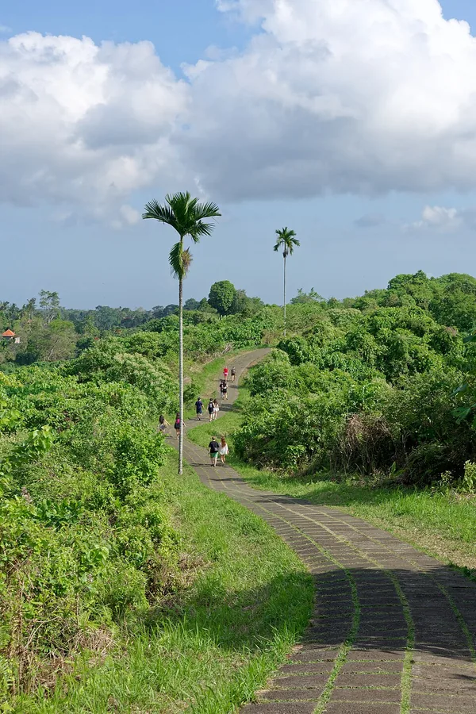
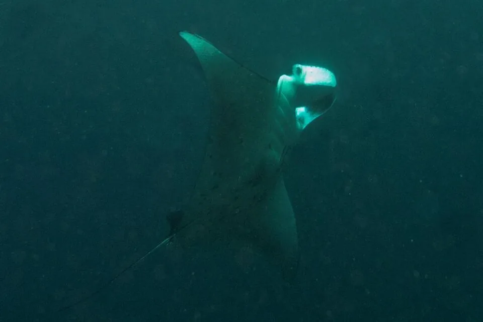
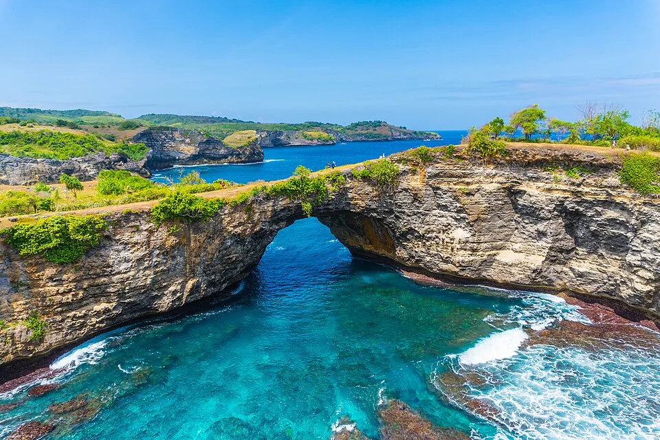
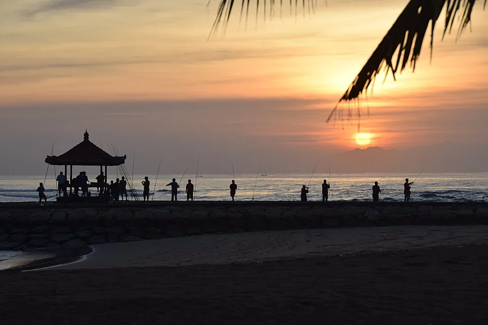
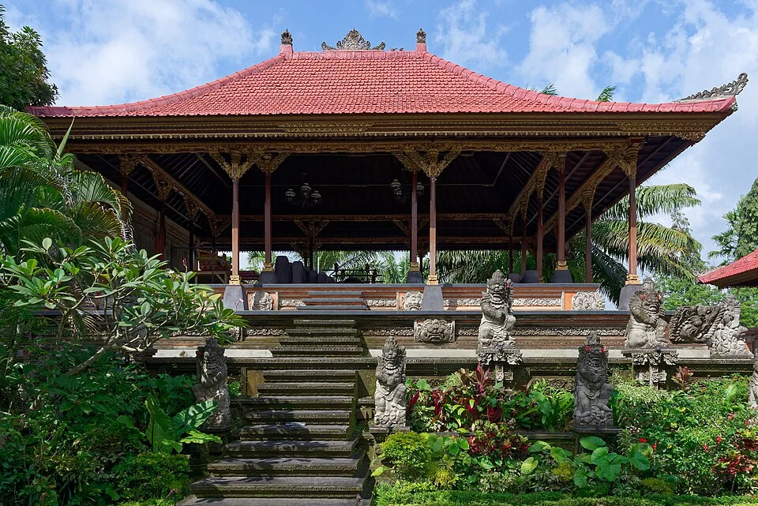
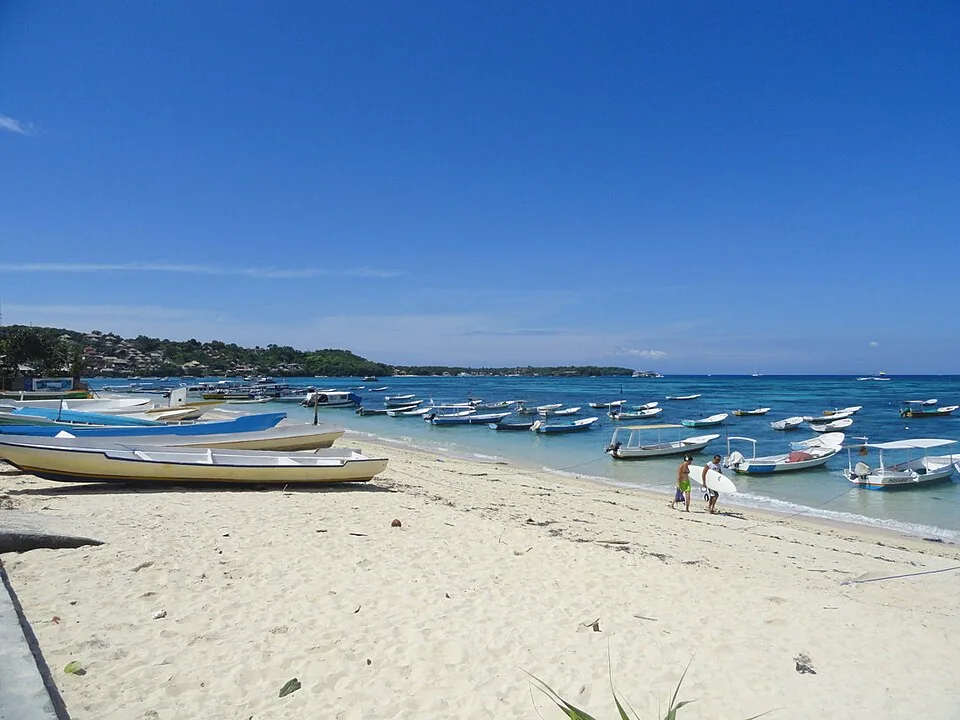
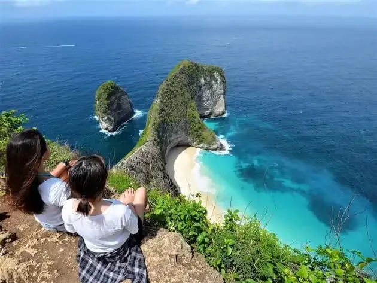
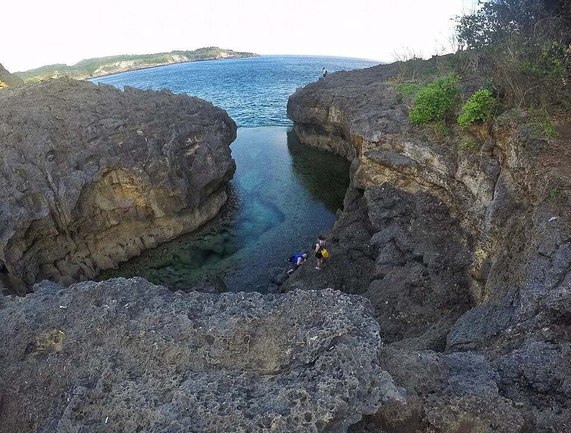
訂位代號 E77EN2；兩人來回機票共 NT$30,000，已付款。
去程預約車建議 05:15 從南勢角出發，目標約 06:10 抵達桃園機場第二航廈。回程 21:20 抵達後同樣以預約接送為主；下訂前請接送業者依當日路況重新確認集合時間。
價格為 2026/08/09 Agoda 指定日期、2 人 1 房、結帳前含稅實查；促銷、匯率與房況仍會變動。
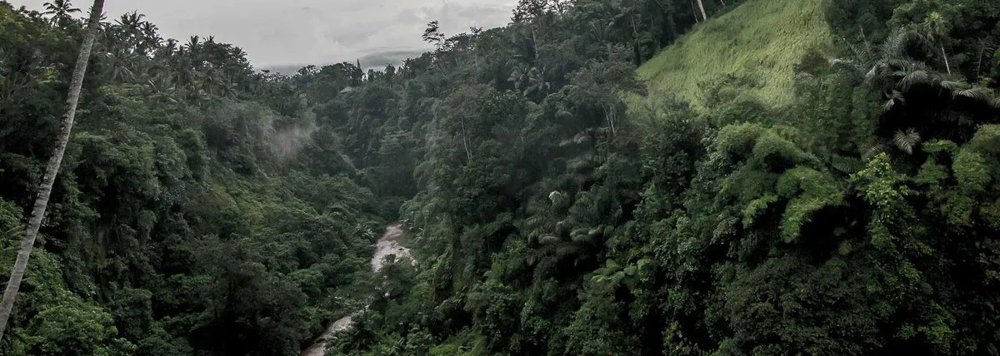
05/22–05/25 · 3 晚
山谷景經典套房、特大床、附早餐。靠近 Sanggingan、距烏布中心約 3 公里，適合景觀與動線平衡。
Agoda 安心取消至 2027/05/22；05/20 扣款
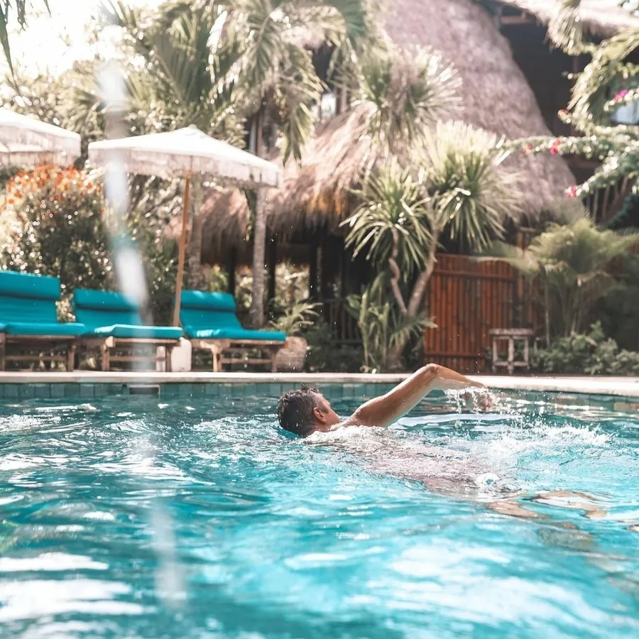
05/25–05/27 · 2 晚
Jungut Batu 露台特大床房，距海灘約 200 公尺，餐廳與商店可步行；本方案未含早餐。
2027/05/18 前免費取消；05/16 扣款
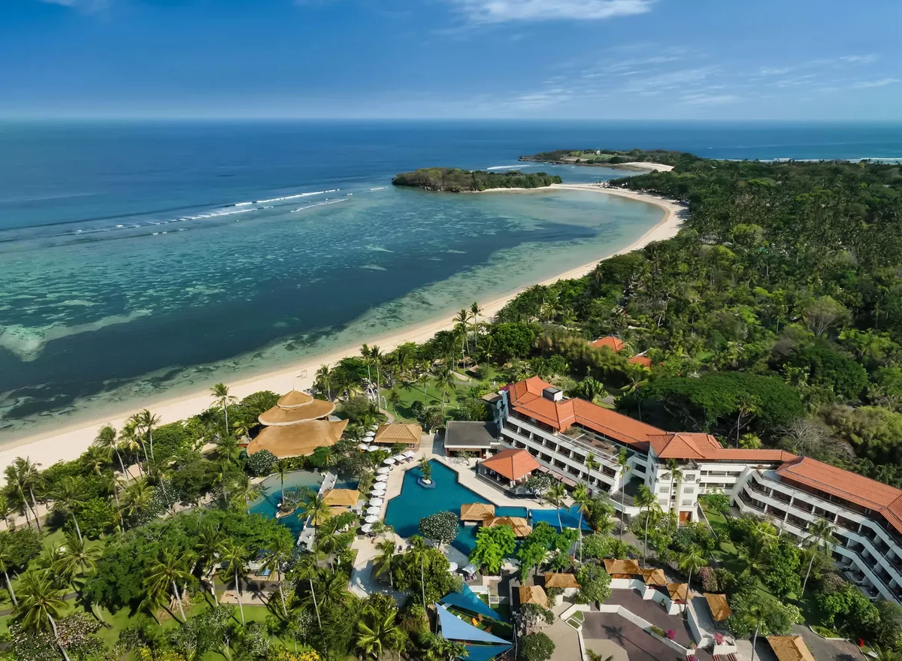
05/27–05/29 · 2 晚
高級特大床房、雙人早餐、私人白沙灘與 3 座泳池；同房住兩晚，不需要中途換房。
2027/05/24 前免費取消；05/22 扣款
時間是可執行的目標，不是軍令。船班、海況與峇里車程須在出發前更新。
預約接送從南勢角出發；27 吋託運箱、登機箱、小背包上車。
06:10桃園機場第二航廈報到、託運與早餐。
09:10華航 CI0771 起飛。
14:35抵達 DPS，預留 75–100 分鐘辦理入境、領行李與會合接送。
16:30私人接送前往烏布；尖峰車程約 1.5–2.5 小時。
19:00Ulun Ubud 入住、飯店或附近簡單晚餐，早點休息。
吃少量香蕉或餅乾後，由包車司機從 Ulun Ubud 接送；山區清晨偏涼，帶薄外套。
06:15AKASA Specialty Coffee 正式早餐、咖啡與拍攝 Mount Batur／Lake Batur，預留 75–90 分鐘。2027 營業時間與景觀位須事先確認。
08:15沿 Kintamani 北往南動線出發；預留收費站、週日車流與山路緩衝。
09:00Tirta Empul 聖泉寺約 2 小時：看泉池、寺廟與祭祀；是否參加 Melukat 淨身儀式到現場再決定。
11:30沿途午餐，不再另外安排第二間景觀咖啡廳。
13:00Tibumana Waterfall：步道、溪谷與瀑布停留約 1.5 小時。
15:30返回 Ulun Ubud，下午留給泳池、午睡或飯店晚餐。
Campuhan Ridge Walk 清晨散步，避開烈日，往返約 1.5–2 小時。
09:30回飯店早餐、泳池與休息。
12:00前往烏布中心午餐；自由逛市場、街區與烏布皇宮外圍。
15:00烏布中高階 SPA 約 2 小時，兩人預算 NT$2,500–4,000；結束後直接留在皇宮周邊。
17:30提早晚餐並換票，不把 SPA 與 19:30 演出接得太緊。
19:30烏布皇宮傳統舞蹈；演出場次與劇目出發前確認。
早餐、退房，確認所有行李都有防水外罩。
09:00包車前往 Sanur 港；預留 1.5–2 小時與港口報到緩衝。
11:30目標搭午前後快艇前往 Nusa Lembongan，實際班次以訂位確認單為準。
13:00抵達後使用飯店／船公司接駁至 Tigerlilly's，寄放行李或入住。
15:30Jungut Batu 海灘散步、咖啡或泳池。
17:45海邊夕陽與步行可達餐廳晚餐。
簡單早餐，攜帶泳衣、防曬、防水袋與暈船藥。
07:15與小團快艇會合，依海況前往 Manta Point／Manta Bay 等點位。
08:00魟魚浮潛與珊瑚點；野生動物不保證出現，安全永遠優先。
11:00登上 Nusa Penida，包車走西線。
12:00Kelingking Beach 觀景台：保留景點，不走下沙灘。
14:00Broken Beach＋Angel's Billabong：僅觀景，不嘗試下到 Broken Beach。
17:00返回藍夢島，洗澡、休息與海邊晚餐。
早餐、最後一次 Jungut Batu 海邊散步與退房。
10:30前往碼頭報到；目標搭 11:00 前後快艇回 Sanur。
12:30Sanur 接車前往 Nusa Dua，午餐視交通安排在途中或飯店。
15:00Nusa Dua Beach Hotel & Spa 入住。
16:00私人海灘、泳池、熟悉飯店與確認隔日免費活動。
18:30海邊晚餐；SPA 菜單若有雙人優惠才考慮加購。
慢慢吃早餐，不設鬧鐘式行軍。
09:30私人白沙灘、散步、游泳或飯店免費晨間活動。
12:30飯店午餐或步行／短程車到 Bali Collection。
14:00泳池、午睡、閱讀；這段空白是本日主行程。
16:30若館內 SPA 有合理雙人促銷，可臨時加購；否則繼續享受已付費設施。
18:00海灘夕陽與最後一晚晚餐。
早餐、海灘或最後一次泳池。
10:45洗澡、整理行李，11:30 前完成退房。
12:15預約接送前往 DPS；飯店至機場正常約 25–40 分鐘，但仍保留塞車緩衝。
13:00機場報到、託運、午餐與採買。
15:55CI0772 起飛。
21:20抵達桃園第二航廈，領行李後搭預約車回南勢角。
峇里島時間最容易耗在塞車與碼頭；所有接駁採「先預約、留緩衝、不要跨公司硬接」原則。
輸入框可以直接調整，總額會自動重算。目標：當地 NT$80,000；硬上限 NT$90,000。
| 項目 | 兩人預算 |
|---|---|
| 機票（已付款） | |
| 7 晚住宿 | |
| 台灣＋峇里接送 | |
| 快艇＋島上交通 | |
| 浮潛與景點活動 | |
| 烏布 SPA | |
| 餐飲 | |
| 簽證、旅遊稅、eSIM、保險與備用金 | |
| 全旅程合計 | NT$109,560 |
| 扣除已付機票 | NT$79,560 |
貼近 NT$80,000 目標，仍在硬上限內。
費用為規劃值，不是報價。印尼盾、船班、活動與交通請於預訂日重新換算。
勾選狀態會保存在這台裝置的瀏覽器。先訂免費取消住宿，再處理船班與海上行程。
以下依 2026/08/09 可查官方資訊整理；2027/05 出發前 30 天必須重新確認。
總共：1 個 27 吋託運箱＋1 個登機箱＋1 個小背包。快艇日將電子產品、證件、藥品與換洗衣物放小背包，兩只行李箱套防水罩。
兩人沒有飲食限制，可安排印尼料理、海鮮與特色餐廳。先確認帳單是否已含服務費；若服務特別好，可自行留下小額現金。飲水以瓶裝或可靠過濾水為主。
中信華航鼎尊無限卡可使用 Visa Infinite 無限秘書，服務國家包含印尼，可請秘書代為聯絡 AKASA；但不保證店家接受預約，也不保證第一排景觀位，取得店家書面確認才算完成。
Day 2 於 04:45 看即時天氣：Kintamani 明顯大雨或濃霧就取消 AKASA，恢復較晚出發的 Tirta Empul＋Tibumana；不要為一杯咖啡浪費往返山路。其他烏布雨天可把步道或瀑布改成 SPA、咖啡廳與皇宮街區。海況差則取消魟魚浮潛，改藍夢島紅樹林與海灘慢遊。